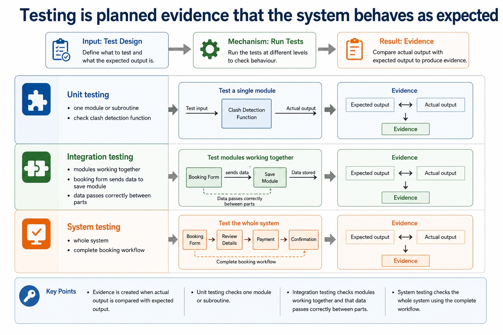
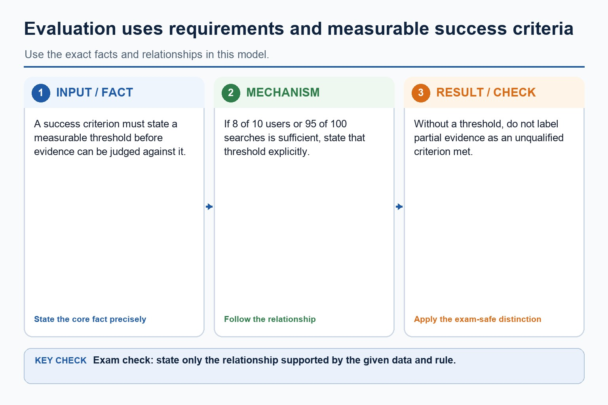
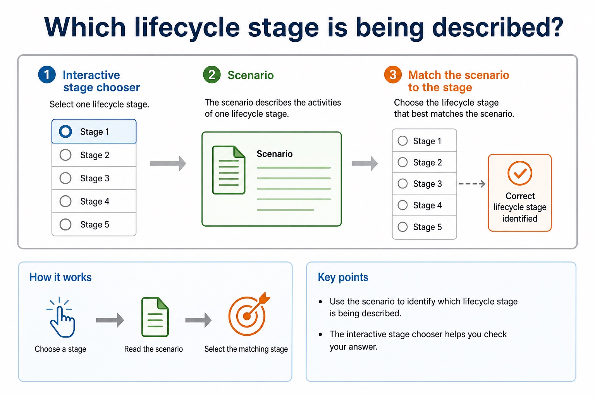

A system is not finished when it runs once. It is finished when it is tested, delivered, maintained and evaluated.
This lesson connects the later software development stages: implementation, testing, maintenance and evaluation.
Chinese support: implementation 实施, testing 测试, test data 测试数据, maintenance 维护, evaluation 评价。
Distinguishimplementation, testing, maintenance and evaluation
Classifytest data and maintenance types
Explainhow evidence links back to requirements and success criteria
Implementationbuild and installfrom design to working system
Testingfind faultsnormal, abnormal, boundary
Maintenancechange after releasecorrective, adaptive, perfective
Evaluationjudge successcompare with criteria
Why this matters
Cambridge answers often need cause and consequence: what is tested, why that test is useful, and how the result affects release or maintenance.
Common trap
Testing checks for faults. Evaluation judges whether the final system meets requirements and success criteria. They overlap, but they are not the same answer.
Warm-up hook
The booking system runs once. Can we release it?
Pick the best response before the keyboard gets too proud of itself.
Choose the answer that gives evidence-based reasoning.
Implementation
Implementation turns the design into a working system
Build
Program modules, create files or databases, implement interfaces and connect components.
Install
Put the system into the user environment, configure hardware, accounts, permissions and data.
Document
Prepare user instructions and technical notes so the system can be used and supported.
Implementation should follow the design documentation. If implementation silently changes the design, testing may no longer match the intended system.
Implementation turns the design into a working system
Implementation turns the design into a working system: source-grounded visual explanation.
Lesson fact: Implementation
Lesson fact: Program modules, create files or databases, implement interfaces and connect components.
Lesson fact: Put the system into the user environment, configure hardware, accounts, permissions and data.
Lesson fact: Document
Lesson fact: Prepare user instructions and technical notes so the system can be used and supported.
Lesson fact: Implementation should follow the design documentation. If implementation silently changes the design, testing may no longer match the intended system.
Implementation strategies
Changeover methods balance risk, cost and speed
Method
Idea
Advantage
Risk or cost
Direct
old system stops; new system starts immediately
fast and cheaper
high risk if new system fails
Parallel
old and new run together for a time
outputs can be compared
expensive and more work
Phased
new system introduced one part at a time
faults are contained
takes longer
Pilot
new system trialled in one department or group
real feedback with limited risk
may not reveal every issue
Changeover methods balance risk, cost and speed
Changeover methods balance risk, cost and speed: source-grounded visual explanation.
Lesson fact: Implementation strategies
Lesson fact: Advantage
Lesson fact: Risk or cost
Lesson fact: old system stops; new system starts immediately
Lesson fact: fast and cheaper
Lesson fact: high risk if new system fails
Lesson fact: Parallel
Lesson fact: old and new run together for a time
Lesson fact: outputs can be compared
Lesson fact: expensive and more work
Lesson fact: new system introduced one part at a time
Lesson fact: faults are contained
Testing
Testing is planned evidence that the system behaves as expected
Type
Focus
Example
Evidence
Unit testing
one module or subroutine
check clash detection function
actual output compared with expected output
Integration testing
modules working together
booking form sends data to save module
data passes correctly between parts
System testing
whole system
complete booking workflow
end-to-end results
Acceptance testing
user needs and success criteria
teacher completes booking under target time
user trial records
Testing is planned evidence that the system behaves as expected

Testing is planned evidence that the system behaves as expected: source-grounded visual explanation.
Lesson fact: Evidence
Lesson fact: Unit testing
Lesson fact: one module or subroutine
Lesson fact: check clash detection function
Lesson fact: actual output compared with expected output
Lesson fact: Integration testing
Lesson fact: modules working together
Lesson fact: booking form sends data to save module
Lesson fact: data passes correctly between parts
Lesson fact: System testing
Lesson fact: whole system
Lesson fact: complete booking workflow
Test data
Good testing uses different categories of data
Category
Meaning
Room capacity example
Expected result
Normal
valid typical data
24 students for capacity 30
accepted
Boundary
valid or invalid data at the edge
30 and 31 for capacity 30
30 accepted; 31 rejected
Abnormal
invalid data of wrong type or outside rules
minus 4 or “many”
rejected with message
Extreme
largest or smallest valid value
1 and 30 if valid range is 1 to 30
accepted
Good testing uses different categories of data
Good testing uses different categories of data: source-grounded visual explanation.
Lesson fact: Test data
Lesson fact: Category
Lesson fact: Room capacity example
Lesson fact: Expected result
Lesson fact: valid typical data
Lesson fact: 24 students for capacity 30
Lesson fact: accepted
Lesson fact: Boundary
Lesson fact: valid or invalid data at the edge
Lesson fact: 30 and 31 for capacity 30
Lesson fact: 30 accepted; 31 rejected
Lesson fact: Abnormal
Maintenance
Maintenance changes a system after it has been delivered
Corrective
Fixing faults found after release, such as a booking clash that was not rejected.
Adaptive
Changing the system because the environment changes, such as a new timetable structure.
Perfective
Improving performance, usability or features, such as faster room search.
Maintenance changes a system after it has been delivered
Maintenance changes a system after it has been delivered: source-grounded visual explanation.
Lesson fact: Maintenance
Lesson fact: Corrective
Lesson fact: Fixing faults found after release, such as a booking clash that was not rejected.
Lesson fact: Adaptive
Lesson fact: Changing the system because the environment changes, such as a new timetable structure.
Lesson fact: Perfective
Lesson fact: Improving performance, usability or features, such as faster room search.
Evaluation
Evaluation judges the final system against requirements and success criteria
Success criterion
Evidence
Evaluation judgement
teachers create booking in under 2 minutes
8 out of 10 trial users met the target
criterion met, but training may help remaining users
reject double bookings
all clash test cases rejected invalid bookings
criterion met for tested cases
search within 2 seconds
95 of 100 searches completed within target
criterion met if target was 95%
Evaluation should be evidence-based. “Users liked it” is weak unless it is connected to a measured survey, task result or success criterion.
Evaluation judges the final system against requirements and success criteria

Evaluation judges the final system against requirements and success criteria: source-grounded visual explanation.
Lesson fact: Evaluation
Lesson fact: Success criterion
Lesson fact: Evidence
Lesson fact: Evaluation judgement
Lesson fact: teachers create booking in under 2 minutes
Lesson fact: 8 out of 10 trial users met the target
Lesson fact: criterion met, but training may help remaining users
Lesson fact: reject double bookings
Lesson fact: all clash test cases rejected invalid bookings
Lesson fact: criterion met for tested cases
Lesson fact: search within 2 seconds
Lesson fact: 95 of 100 searches completed within target
Interactive stage chooser
Which lifecycle stage is being described?
Which lifecycle stage is being described?

Which lifecycle stage is being described?: source-grounded visual explanation.
Lesson fact: Interactive stage chooser
Lesson fact: Scenario
Test data classifier
Classify input for NumberOfStudents, valid range 1 to 30
Classify input for NumberOfStudents, valid range 1 to 30
Classify input for NumberOfStudents, valid range 1 to 30: source-grounded visual explanation.
Lesson fact: Test data classifier
Lesson fact: Test value
Worked examples
From test plan to evaluation judgement
Practice with instant checking
Answer, check, then reveal the model answer if needed
Mistake debugging
Fix the lifecycle mix-up
Exam-style questions
Cambridge-style questions with expandable MS
These are original AS-style questions. The mark schemes use Cambridge-style precision, not copied past-paper wording.
Extra practice
Testing methods, strategy and test plan
Dry run manually traces code; walkthrough is a structured peer review; white-box derives tests from internal paths; black-box derives tests from specifications. Integration tests combined modules, using a stub to imitate an unavailable called module.
Alpha testing is performed internally before release; beta testing uses selected external users in realistic settings; acceptance testing checks the delivered system against agreed requirements. A strategy states levels/methods/responsibility, while a test plan records test ID, purpose, data, expected result, actual result and pass/fail.
Worked example: Test login
White-box tests cover true/false paths and lockout count; black-box tests valid, invalid and boundary inputs from requirements; a stub returns simulated account results before the database is ready; acceptance confirms the agreed lockout behaviour.
Targeted practice
1. Which method derives tests from source-code paths?
Show answer
White-box testing.
2. Who normally performs beta testing?
Show answer
Selected external/end users in realistic use.
3. What does a stub replace?
Show answer
A called module/component not yet available.
Exam-style question
4 marks
Describe four fields that should appear in a test plan and explain why expected and actual results are both recorded.
Show MS
B1 test identifier/purpose or feature
B1 test data/input and expected result
B1 actual result and pass/fail outcome
B1 comparison shows whether observed behaviour meets the predicted requirement
Summary
What to remember
Testingplanned test data, expected results and actual results
Maintenancecorrective, adaptive and perfective changes after release
Evaluationjudgement against requirements and success criteria using evidence
Homework
Complete a release evidence pack for a booking system
Write four test cases for NumberOfStudents, including normal, boundary and abnormal data.
Choose one changeover method for a school booking system and justify it with one advantage and one risk.
Classify three maintenance requests as corrective, adaptive or perfective, with a reason for each.
Write a 6-mark evaluation paragraph using at least two success criteria and evidence.
Marking focus: named stage, specific evidence, and a consequence. Avoid “better” unless you say better at what.